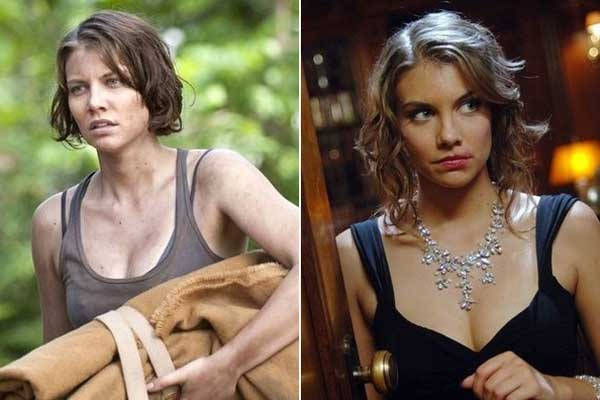

Культовая кинолента в многосерийном исполнении широко известна. У нее много особенностей, включая стремление разработчиков «Сверхъестественное» возвращать участников. Зритель узнает фильм по норме возвращать персонажей из прошлого, и эти камео считаются радостными для поклонников. Из последних событий – возвращение Лорен Коэн, несостоявшееся. По ее словам, и ее не так давно приглашали вернуться в шоу...
Подробнее